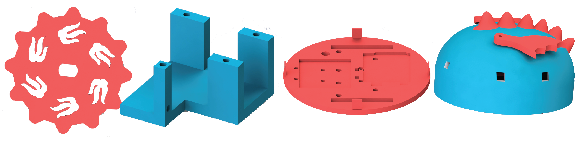

Mechanical Subsystem

Our robots consist of five main mechanical components: the wheels, motors, motor mounts, base, and shell.
We decided to 3D print our wheels. They are 3 inches in diameter, and 1/4 inch thick. Because we manufactured them ourselves, they are able to be mounted directly onto the motor. We also made them have interesting geometry. The dragon's wheels had flame decals, and the bee's wer made up of hexagons. We didn't make them perfect circles either, which gave them a slight "clunky" driving style. These helped give the robots more personality.
We realized that our robots were going to be fairy heavy (an 8-pack of batteries is not as light as we would have hoped). This meant that we would need a drive system with fairly high torque. We looked through the PoE lab's available motors/gearboxes, and found ones that would fit on our robot; our wheels were only 3 or so inches apart so our motor couldn't stick into the robot past 1.5 inches. We then turned them on to see which ones were the highest torque. We decided that having different motors for the two robots would be fun, since we wanted them to have differentiating features. We decided to make the bee faster and the dragon slower. We found that because the app has aslight delay, the slower motors made a much more controllable robot.
Once we had our motors picked out, we needed to make motors mounts to attach them to the rest of our robot. These were also 3D printed.
We made a custom base for each of our robots. These had specific mounting points for the Arduino and battery pack, and holes for wheels and motors. We countersunk all holes so that we could have screws sit flush. We added pegs to be inserted into the shell for easy removal.
We also made a custom shell for each robot. The shells were made to match features of the animal the robot was based on. The bee's shell was made of hexagons to mimic a honeycomb, and the dragon's had spikes coming off of it. They also had holes for sensors and the IR LEDs to poke through; all sensor holes were placed 1.5 inches above the base for all robots. To attach them to the base, we added holes for the pegs to fit into.

The progression of our mechanical subsystem can be found in our blog posts: